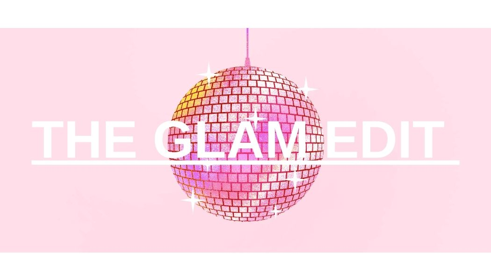

Welcome to the Glam Edit!
Your online hotspot for all things beauty related , makeup tutorials and honest product reviews. The Glam Edit was created for Irish female college students aged 18-25 who love beauty but are living on a student budget. Spending €40 on concealer isn't realistic.
Our fundamental goal is to help you look and feel confident every day by finding and testing the best affordable products available in Ireland and makeup tips too!
Our goal is to provide you with products recommendations , beauty tips and tutorials on how to master your makeup routine!
College students don't have the money to be spending on expensive luxury makeup but want to achieve the same looks. We need makeup that is affordable and long lasting to ensure we use don't waste money
As college students ourselves, we know the struggle trying to make enough money for rent, food and nights out. Beauty products advertised on social media promote luxury brands that aren't realistic for college students. The Glam Edit focuses on promoting affordable alternatives to these high end products while keeping the quality high. We promote products available all across Ireland, saving you money on delivery costs from abroad.
We provide honest recommendations with no sponsorship biases!
We test products based on:
Please feel free to contact us if you want personalised recommendations or have any queries. We are happy to help 😀
Emails: caoimhe.mcdonnell84@mail.dcu.ie | sophie.twiss2@mail.dcu.ie | maggi.oshea2@mail.dcu.ie